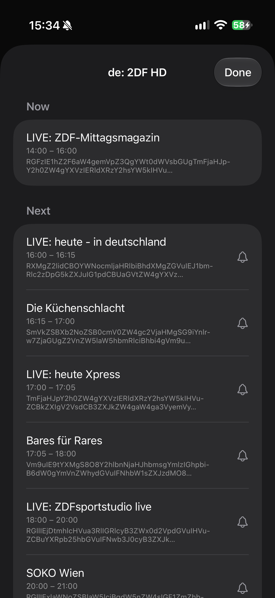

Ekle
Xtream Codes girişi veya bir M3U / M3U8 bağlantısı ekle
Favori ve geçmişi cihazların arasında senkronlamak için Apple ile giriş yap

Xtream Codes, EPG, reklamsız
IPTV ve M3U Oynatıcı
Kendi M3U veya Xtream Codes listen için sade bir oynatıcı.
Canlı TV, film ve dizi. Reklam yok.
Favoriler, indirme ve kaldığın yerden devam.
Easytv Play bir medya oynatıcıdır. Kanal, abonelik veya içerik sunmaz. Yalnızca izlemeye yetkili olduğun bir kaynak ekle. EPG, altyazı ve yayın kalitesi sağlayıcına bağlıdır.
Reklam yok. Üçüncü taraf takip yok.

LİSTEN
Easytv Play kanal, abonelik veya içerik sunmaz. Yalnızca izlemeye yetkili olduğun bir kaynak ekle.
Favoriler, indirme, EPG, kaldığın yerden devam, altyazı, Face ID kilidi ve Apple ile giriş.
Ekle
Favori ve geçmişi cihazların arasında senkronlamak için Apple ile giriş yap
Canlı TV
Arşivinde ara ve favorilere kaydet
Rehber

Devam

İndirme

Kanal, abonelik veya içerik sunmaz. Yalnızca izlemeye yetkili olduğun bir kaynak ekle. EPG, altyazı ve yayın kalitesi sağlayıcına bağlıdır.
Reklam yok. Üçüncü taraf takip yok.
Uygulama arayüzü Türkçe, İngilizce, Almanca, İspanyolca, Fransızca, İtalyanca, Felemenkçe, Arapça, Japonca, Korece ve Basitleştirilmiş Çince.
Ekranlar


Lisanslar
Bu uygulama aşağıdaki açık kaynak bileşenleri kullanır.
© VideoLAN ve VLCKit yazarları.
GNU Lesser General Public License, sürüm 2.1 veya sonrası (LGPL-2.1-or-later) ile lisanslıdır. Framework dinamik bağlanır ve kullanıcı LGPL’ye uygun olarak değiştirebilir.
Easytv Play, kendi M3U veya Xtream çalma listelerin için bir IPTV oynatıcıdır.
Bu listeden canlı TV, film ve dizi oynatır; favoriler, indirme ve kaldığın yerden devam vardır. Reklam yok. Üçüncü taraf takip yok.
Kanal, abonelik veya içerik sunmaz. Yalnızca izlemeye yetkili olduğun bir kaynak ekle. EPG, altyazı ve yayın kalitesi sağlayıcına bağlıdır.
Easytv Play bir medya oynatıcıdır. Kanal, abonelik veya içerik sunmaz. Yalnızca izlemeye yetkili olduğun bir kaynak ekle. EPG, altyazı ve yayın kalitesi sağlayıcına bağlıdır.
Xtream Codes girişi veya bir M3U / M3U8 bağlantısı ekle
Reklam yok. Üçüncü taraf takip yok.
Favori ve geçmişi cihazların arasında senkronlamak için Apple ile giriş yap. Ayrıntı gizlilik politikasında.
Easytv Play desteği. Yaz: hello@soneraltin.com.